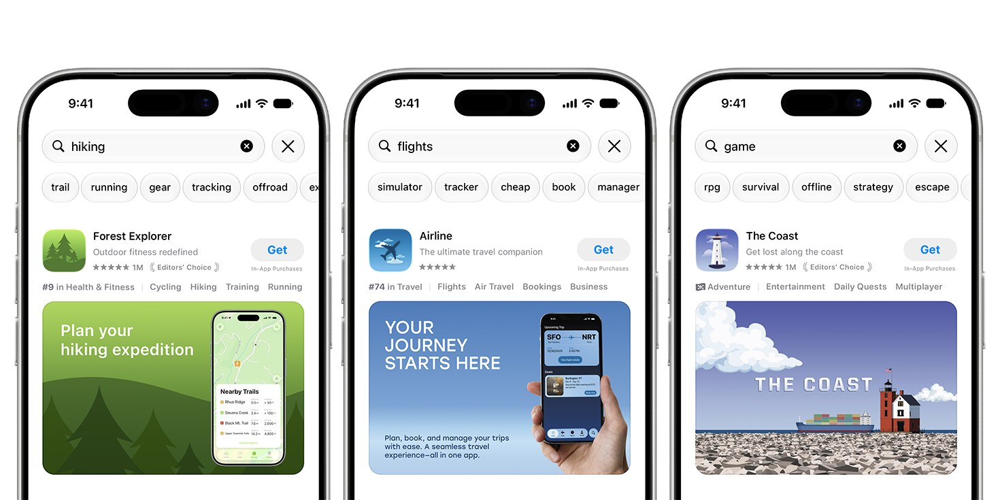

Food Truck Cafe
21 November. 2026.11.20 is live on the App Store; test build 2026.11.21 (1) is in TestFlight.
1Next
You
Release 2026.11.23 is with Apple (submitted 23 November, 13:20). It goes out by itself once approved.
C chapter tab: three cabin scenes from your new direction (pink, white, mint; cabin with a big window onto a ski resort), to pick from.
Ads fix built (not in a build; the release is with Apple): see Current.
Open: Header and Search Results (Q&A).
Me
I watch the review and tell you when the release is live.
2Q&A
Header and Search Results: what does a player see with and without them? (23 Nov)
- What they are: two optional pictures (or silent looping videos, 5 to 30 s) Apple added this autumn. Only iPhones and iPads on iOS 27 show them. Each can be added or left empty on its own.
- Header, with: a banner above our icon, name and Get button, about a third of the first screen. Nothing is taken away; the screenshots move down. Without (today): the page starts with the icon and name, the screenshots show higher up.
- Search Results, with: one wide picture replaces our three screenshots in the search list. Without (today): search shows our first three screenshots, as now.




- Real pages with and without: I cannot capture them from the Mac: Apple's web store does not show these slots, only the App Store app on iOS 27. On your iPhone, search any big game: a result with one wide picture has the search slot filled, one with three screenshots has not; open a game and a banner above the icon is its header.
- An upright iPhone shows only the middle of the header (the picture is very wide, 21:9); the truck and name must sit in the middle, as in the draft.
- My view: a Header only adds, so it is worth one good picture when there is time. The Search Results picture is a trade: one picture instead of three screenshots that already show the game well; I would leave it empty, or try it later with Apple's A/B test.
- Not needed for today's release. Both can be added any day without a new version (Apple reviews the picture alone).
3Current
Ads that fail to start: fixed for the next release. 23 November; not in a build (release 2026.11.23 is with Apple).
- What I found in our code: Unity Ads was started once, at the start menu. If that one start failed (no network in the first seconds, Unity not answering, a filtering network), nothing ever tried again: the between-days ad waited 20 s and gave up for the whole visit, the shop's coin ad said "Ads unavailable", the Daily Treats ad could not play. That is what the US player's two ad-less visits looked like: not a single request.
- Also found: an ad that failed to load was asked for again every 10 s without end; a load that never answered left the between-days ad stuck until the game was closed.
- The fix: the start is kept up for as long as the game runs. A failed start is tried again after 5, 15, 30 and 60 seconds, then every 2 minutes (every 5 minutes if Unity reports an ad blocker). With no network no try is spent; the next one goes when the network is back.
- Anything that wants an ad (a day's end, the shop's coin ad, the Daily Treats ad) and coming back to the game bring the next try forward, at most once every 5 seconds. As soon as the start works, the between-days ad is loaded.
- Failed ad loads now wait longer each time (10 s up to 2 min), and a load that does not answer within 30 s counts as failed. The shop's coin button waits for the start instead of giving up.
- Safe: nothing waits on an ad or blocks the game; a player who never gets ads plays as before. Unity's own SDK accepts a second start after a failed one. Checked in the editor: the normal start, a failed start reported by Unity (counted, next try in 5 s), a full day to the shop with the ad ready. A real failure can only happen on a phone; it shows in the data from the next release.
- To see it work: a new analytics event "adsStarted" (how many tries, how many seconds). It needs one line in Unity's Event Manager; until then Unity ignores it, which harms nothing.
4MVP
Nothing open. Release 2026.11.23 is submitted.
5Backlog
Nothing open.
6Analysis
Nothing open.
7Marketing
Nothing open.